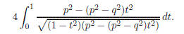
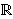
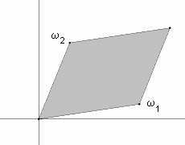
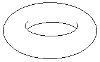
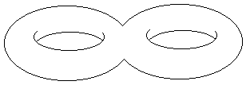

q2x2 +
p2y2 =
p2q2.
Tada je njezin opseg jednak vrijednosti integrala

Pomoæu racionalne supstitucije, ovaj se integral može svesti
na slièan integral u kojem se pod korijenom nalazi kubna funkcija.
Opæenito se integrali u kojima je javljaju drugi korijeni
polinoma treæeg ili èetvrtog stupnja nazivaju eliptièki integrali. Oni se ne mogu izraziti pomoæu elementarnih
funkcija. Meðutim, moguæe ih je izraziti pomoæu tzv.
Weierstrassove
-funkcije.
Ova funkcija zadovoljava diferencijalnu jednadžbu oblika
(') / 4 =
+
a + b.
Ovdje je njena uloga analogna ulozi funkcije sinus kod
raèunanja integrala kojih kojih se ispod korijena javljaju
kvadratne funkcije. Naime, funkcija sin x je rješenje
diferencijalne jednadžbe y2 + (y ')2 = 1.
Slièno kao što jediniènu kružnicu možemo parametrizirati
pomoæu (cos t, sin t), tako se kompleksne toèke
na eliptièkoj krivulji y2 = x3 +
ax + b mogu parametrizirati pomoæu
((t),
'(t)/2).
Štoviše, pokazuje se da ako je
P = ((t),
'(t)/2) i
Q = ((u),
'(u)/2),
onda je P + Q =
((t+u),
'(t+u)/2).
To znaèi da zbrajanje toèaka na
E()
odgovara zbrajanju kompleksnih brojeva. Poznavanje te èinjenice daje
elegantni dokaz asocijativnosti zbrajanja toèaka na eliptièkoj
krivulji.
Kad se promatra nad poljem , eliptièka krivulja je stvarno "krivulja", tj.
1-dimenzionalni objekt. No, promatrana nad
ona postaje
2-dimenzionalni objekt ("ploha") u 4-dimenzionalnom prostoru.
Pokušajmo vizualizirati tu plohu.
Tu nam može pomoæi funkcija .
Ona posjeduje mnoga važna svojstva. Jedno njih jest da je
dvostruko periodièna, tj. postoje kompleksni
brojevi i
 (takvi da
/
nije realan broj) sa svojstvom
(z + m
+ n
)
= (z)
za sve cijele brojeve m, n.
Oznaèimo s L "rešetku" svih toèaka oblika
m
+ n
. Funkcija
je analitièka
u svim toèkama kompleksne ravnine, osim u toèkama iz
rešetke L u kojima ima pol drugog reda
(tj. je
meromorfna funkcija). Opæenito se meromorfne dvostruko
periodiène funkcije nazivaju eliptièke funkcije.
(takvi da
/
nije realan broj) sa svojstvom
(z + m
+ n
)
= (z)
za sve cijele brojeve m, n.
Oznaèimo s L "rešetku" svih toèaka oblika
m
+ n
. Funkcija
je analitièka
u svim toèkama kompleksne ravnine, osim u toèkama iz
rešetke L u kojima ima pol drugog reda
(tj. je
meromorfna funkcija). Opæenito se meromorfne dvostruko
periodiène funkcije nazivaju eliptièke funkcije.
Gore navedena parametrizacija
toèaka na eliptièkoj krivulji pomoæu funkcije
predstavlja zapravo
izomorfizam grupa
E() i
/ L.
Funkcija
je u potpunosti odreðena svojim vrijednostima u "fundamentalnom
paralelogramu" koji se sastoji od svih kompleksnih brojeva
oblika m
+ n
,
0  m, n < 1.
m, n < 1.

Razlika toèaka koje se nalaze nasuprot jedna drugoj na paralelnim
stranicama tog paralelograma je element iz L. Stoga
su te toèke poistovjeæene u skupu
/ L.
Da bi vizualizirali taj skup,
možemo zamisliti da smo najprije "slijepili" dvije suprotne
stranice paralelograma. Tako dobivamo valjak. Nakon toga
"slijepimo" baze toga valjka. Tako dobivamo torus:

Torus možemo zamisliti i kao sferu s "rupom". Pokazuje se
da se svaka algebarska krivulja može prikazati u
trodimenzionalnom prostoru kao sfera s konaèno mnogo rupa.

Taj broj rupa se naziva genus ili rod krivulje.
Alternativna (šira) definicija eliptièke krivulje je da je to
algebarska krivulja genusa jednakog 1. Ova definicija ukljuèuje
ne samo nesingularne kubne krivulje, veæ i sve one krivulje koje
su im biracionalnog ekvivalentne. To znaèi se iz njih mogu
dobiti pomoæu biracionalne transformacije - racionalne
transformacije èiji je inverz takoðer racionalna transformacija.
Biracionalne transformacije èuvaju genus krivulje, ali ne èuvaju
njezin stupanj.
Ako krivulja ima stupanj n, onda je njezin genus
(n - 1)(n - 2) / 2, s time da ako je
krivulja nesingularna, onda joj je genus upravo jednak
(n - 1)(n - 2) / 2.
Poznato je da takozvane hipereliptièke
krivulje èija je jednadžba y2 =
f(x), gdje je f(x) polinom stupnja
n  3
bez višestrukih korijena, imaju genus
(n - 1)/2.
To posebno znaèi da, pored sluèaja kada je n = 3,
i u sluèaju kad je n = 4 takoðer imamo eliptièku krivulju.
Uvjerimo se u to na jednom primjeru.
Neka je C krivulja zadana jednadžbom
3
bez višestrukih korijena, imaju genus
(n - 1)/2.
To posebno znaèi da, pored sluèaja kada je n = 3,
i u sluèaju kad je n = 4 takoðer imamo eliptièku krivulju.
Uvjerimo se u to na jednom primjeru.
Neka je C krivulja zadana jednadžbom
y2 = x4 + 3x2
+ 2x.
Uvedimo supstituciju x = 2 / (s - 1),
y = 2t / (s - 1)2.
Inverzna transformacija je s = (x + 2) / x,
t = 2y / x2. Stoga je ovo
biracionalna transformacija. Ona prevodi krivulju C
u eliptièku krivulju danu jednadžbom
t2 = s3 - 3s + 6.
Genus krivulje igra važnu ulogu kod klasifikacije diofantskih
jednadžbi. Naime, o njemu ovisi broj cjelobrojnih, odnosno
racionalnih rješenja jednadžbe, te struktura tih rješenja.
Krivulje genusa 0 su upravo one koje posjeduju parametrizaciju
pomoæu racionalnih funkcija. Svaka krivulja drugog stupnja (konika)
ima genus 0. Npr. krivulja x2 +
y2 = 1 ima racionalnu parametrizaciju
x = 2t / (t2 + 1),
y = (t2 - 1) / (t2 + 1).
Kubne singularne krivulje takoðer imaju genus 0.
Npr. krivulja y2 = x3 ima
singularnu toèku (0,0). Stoga ova kubna krivulja nije eliptièka.
Njezina racionalna parametrizacija je x = t2,
y = t3. Kao drugi primjer navedimo
krivulju y2 = x3 +
2x2. Ona je takoðer singularna i ima
racionalnu parametrizaciju
x = t2 - 2,
y = t3 - 2t.
Krivulja genusa 1 može imati samo konaèno mnogo cjelobrojnih toèaka.
Racionalnih toèaka može biti beskonaèno mnogo, ali su "konaèno generirane" (sve se mogu dobiti iz konaèno toèaka primjenom
grupovne operacije na eliptièkoj krivulji).
Krivulja genusa veæeg od 1 može imati samo konaèno mnogo racionalnih
toèaka. Ova tvrdnja je poznata Mordellova
slutnja koju je
1983. godine dokazao Faltings.